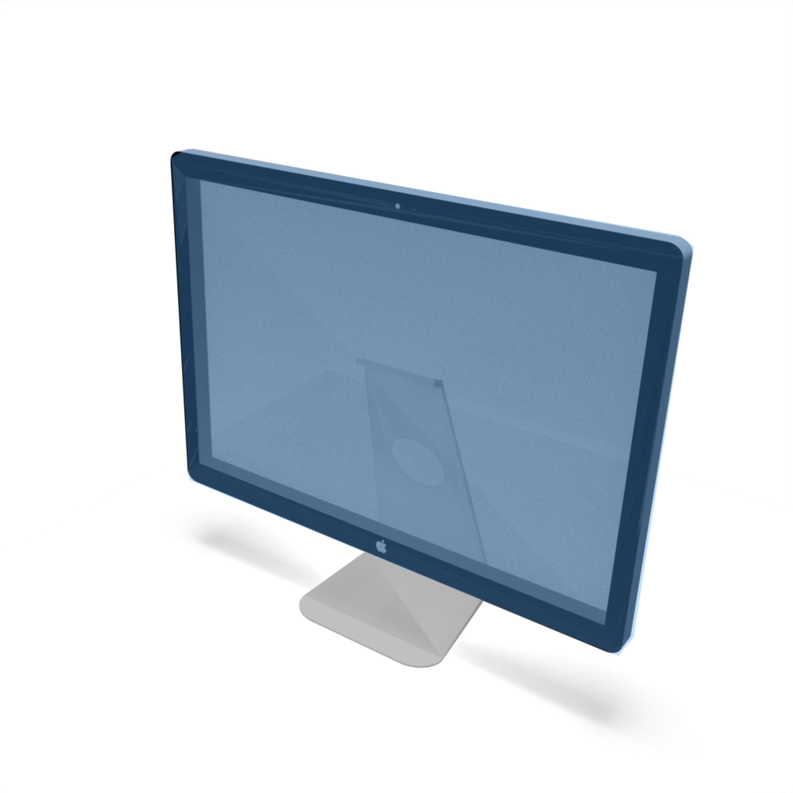
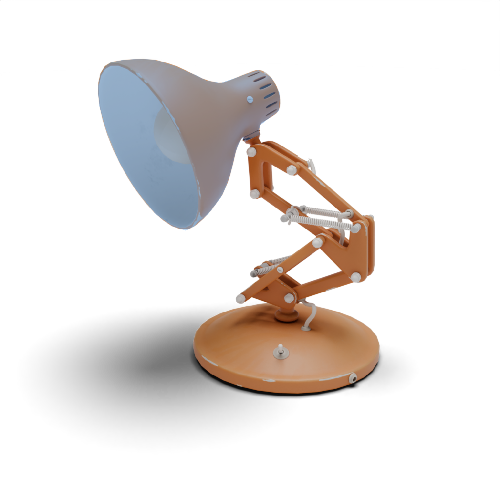
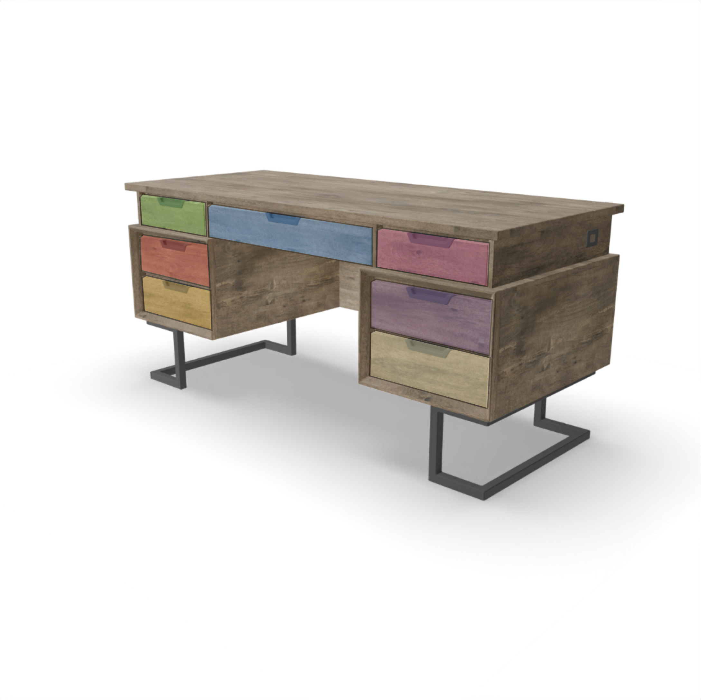
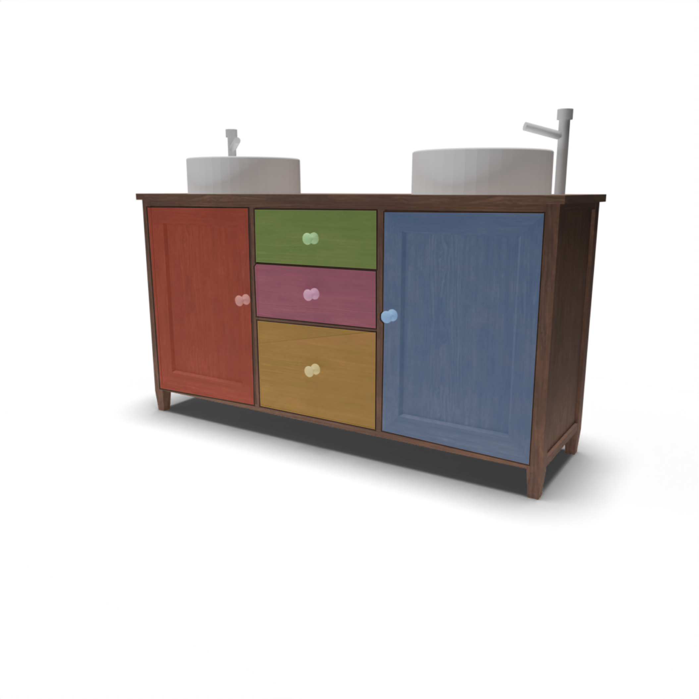

Given a static textured input 3D mesh (left), the part to articulate (highlighted), and a text prompt describing part motion as input, ATOP presents a novel method to estimate the 3D articulation parameters of the part using controllable multi-view motion generation and differentiable rendering.
We present ATOP (Articulate That Object Part), a novel few-shot method based on motion personalization to articulate a static 3D object with respect to a part and its motion as prescribed in a text prompt. Given the scarcity of available datasets with motion attribute annotations, existing methods struggle to generalize well in this task. In our work, the text input allows us to tap into the power of modern-day diffusion models to generate plausible motion samples for the right object category and part. In turn, the input 3D object provides image prompting to personalize the generated motion to the very input object. Our method starts with a pre-trained diffusion model adapted for controllable multi-view motion generation. The resulting motion model can then be employed to realize plausible motion of the input 3D object from multiple views. At last, we transfer the personalized motion to the 3D space of the object via differentiable rendering to optimize part articulation parameters by a score distillation sampling loss.
Inference Pipeline: We begin with a textured, segmented mesh as input. We then render multi-view images and corresponding masks, which are fed into a controllable multi-view motion model that hallucinates part motions conditioned on camera poses and tailored to the input shape. Finally, we lift these motion samples back to 3D by directly optimizing for the motion axis and origin.
We introduce a rigidly constrained optimization framework that delivers physically plausible animations. Unlike soft-deformation approaches such as one used in AnimateAnyMesh (left), which often produce irregular deformations, our method preserves structural integrity and achieves more accurate motion.




If you find this work useful, please cite:
@article{vora2026atop,
title = {Articulate That Object Part (ATOP): 3D Part Articulation from Text and via Motion Personalization},
author = {Vora, Aditya and Nag, Sauradip and Wang, Kai and Zhang, Hao},
journal = {ACM Transactions on Graphics},
year = {2026},
month = jun,
publisher = {Association for Computing Machinery (ACM)},
doi = {10.1145/3820375},
url = {https://doi.org/10.1145/3820375}
}